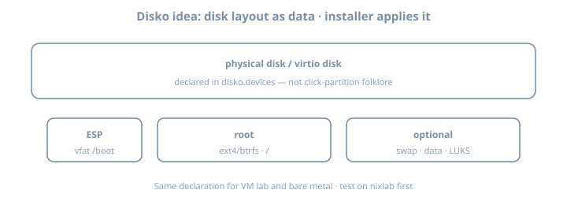

Disko
Disko
Goal: Describe disks declaratively with Disko, install or reinstall a lab host from that description, and wire Disko into your flake so storage stops being tribal knowledge.
Disko can wipe disks. Use a disposable VM, spare drive, or cloud instance. Never experiment on a disk with irreplaceable data.

Why it matters
Installer GUIs and one-shot hardware-configuration.nix fragments do not scale. Fleet habits require repeatable storage: partitions, LVM, btrfs/ZFS layouts, LUKS—as code. Disko is the common 2026 answer in many NixOS fleets.
Without Disko (or equivalent), disaster recovery docs say “partition like last time” and nobody remembers last time.
Theory 1 — What Disko is
Disko turns a Nix attrset into:
- Partitioning / formatting scripts
- Mount configuration compatible with NixOS
- Optionally integrated into
nixos-rebuild/ installer flows
disko.devices = { … }
│
├─► disko script (destroy/create/mount)
└─► fileSystems / boot / swap NixOS options| Piece | Role |
|---|---|
disko.devices.disk.* |
Physical (or virt) disks |
content.type |
gpt, luks, btrfs, filesystem, … |
mountpoint |
Becomes NixOS fileSystems entries |
| CLI modes | destroy / format / mount / disown (names evolve—check --help) |
Disko is not a backup tool. It describes structure; data durability is the backups chapter.
Theory 2 — Minimal GPT + ext4 root (UEFI)
# modules/disko-lab.nix
{
disko.devices = {
disk = {
main = {
type = "disk";
device = "/dev/vda"; # CHANGE per machine: nvme0n1, sda, …
content = {
type = "gpt";
partitions = {
ESP = {
size = "512M";
type = "EF00";
content = {
type = "filesystem";
format = "vfat";
mountpoint = "/boot";
mountOptions = [ "umask=0077" ];
};
};
root = {
size = "100%";
content = {
type = "filesystem";
format = "ext4";
mountpoint = "/";
};
};
};
};
};
};
};
}| Field | Notes |
|---|---|
device |
Host-specific; inject via host module |
type = "gpt" |
UEFI-friendly |
ESP EF00 |
EFI system partition type |
mountpoint |
Becomes NixOS fileSystems |
Prefer stable device paths
device = "/dev/disk/by-id/nvme-…"; # better than /dev/nvme0n1 when possibleVirt devices (/dev/vda) are fine in VMs; metal likes by-id.
Theory 3 — Flake integration
# flake.nix fragment
{
inputs.disko.url = "github:nix-community/disko";
inputs.disko.inputs.nixpkgs.follows = "nixpkgs";
outputs = { self, nixpkgs, disko, ... }: {
nixosConfigurations.lab = nixpkgs.lib.nixosSystem {
system = "x86_64-linux";
modules = [
disko.nixosModules.disko
./hosts/lab/disko.nix
./hosts/lab/configuration.nix
];
};
};
}# From installer ISO or rescue, after networking + clone:
sudo nix --extra-experimental-features "nix-command flakes" run github:nix-community/disko -- \
--mode destroy,format,mount \
--flake .#lab
# modes/flags evolve—check current Disko CLI helpThen install:
sudo nixos-install --flake .#labOr use documented disko-install flows when available in your Disko version.
Evaluate mounts without wiping
nix eval .#nixosConfigurations.lab.config.fileSystems --json | jq 'keys'
# ensure / and /boot appear as expected after disko module mergeTheory 4 — LUKS sketch (common homelab)
root = {
size = "100%";
content = {
type = "luks";
name = "crypted";
settings.allowDiscards = true; # SSDs; understand TRIM tradeoffs
content = {
type = "filesystem";
format = "ext4";
mountpoint = "/";
};
};
};| Unlock method | Notes |
|---|---|
| Passphrase | Simple lab; interactive boot |
| Key file | Automation; protect the key |
| TPM2 | Secure Boot/TPM chapter |
Password vs TPM unlock: passphrase in this chapter’s lab; TPM path appears later. Store recovery keys offline before production encryption.
Theory 5 — btrfs subvolumes (impermanence-ready)
content = {
type = "btrfs";
subvolumes = {
"@" = {
mountpoint = "/";
};
"@home" = {
mountpoint = "/home";
};
"@nix" = {
mountpoint = "/nix";
};
"@persist" = {
mountpoint = "/persist";
};
"@log" = {
mountpoint = "/var/log";
};
};
};Impermanence loves @persist + wipe @ on boot. You can create the layout even if you skip impermanence initially—future-you will thank you.
ZFS note
Disko can express ZFS layouts; complexity jumps (pools, datasets, encryption). If you already run ZFS operationally, Disko still helps repeat the layout; if you are learning both ZFS and Disko, do ext4/btrfs first.
Theory 6 — Host-specific devices without copy-paste hell
# modules/disko-btrfs-template.nix
{
disko.devices.disk.main = {
type = "disk";
# device set per host
content = { /* shared layout */ };
};
}# hosts/lab/disko.nix
{ lib, ... }:
{
imports = [ ../../modules/disko-btrfs-template.nix ];
disko.devices.disk.main.device = lib.mkDefault "/dev/vda";
}# hosts/metal/disko.nix
{
imports = [ ../../modules/disko-btrfs-template.nix ];
disko.devices.disk.main.device = "/dev/disk/by-id/nvme-…";
}Never commit a fleet-wide wrong device path.
Theory 7 — Swap, BIOS, and multi-disk
Swap
swap = {
size = "8G";
content = {
type = "swap";
resumeDevice = true; # if you want hibernation carefully
};
};Or prefer zramSwap in NixOS config and skip disk swap on small VMs—decide intentionally.
Legacy BIOS / hybrid
UEFI is the default story here. BIOS/GPT or MBR layouts exist in Disko examples—follow current docs if you must boot old hardware.
Multi-disk
disk.main → system
disk.data → /var/lib/postgres bulk (example)Keep system vs data responsibilities clear in DISK.md.
Theory 8 — Interaction with hardware-configuration.nix
After Disko-driven install, generated hardware config may still detect NICs and kernel modules. Filesystem mounts should come from Disko’s merge, not a conflicting hand-maintained fileSystems block.
| Source of truth | For |
|---|---|
| Disko | partitions, formats, mountpoints |
hardware-configuration / nixos-generate-config |
often CPU microcode, kernel modules, NIC |
| Host module | hostname, networking, roles |
Conflicts: two modules defining different fileSystems."/" → merge errors or surprise boots.
Worked example — VM lab checklist
1. Create empty qcow2 / virt disk
2. Boot NixOS 26.05 installer ISO
3. Git clone flake (or nix copy)
4. Identify disk: lsblk / by-id
5. Set device in disko config
6. Run disko (destructive)
7. nixos-install --flake .#lab
8. Reboot; verify findmnt / lsblk
9. Wipe once more; reinstall; time itlsblk -f
findmnt /
# source of truth is Nix; /etc/fstab is generated view
cat /etc/fstabDISK.md template
# DISK.md
## lab
- device: /dev/vda (virtio)
- layout: GPT ESP 512M + ext4 root
- LUKS: no
- disko command that saved us: …
- recovery: installer ISO + flake URL + this fileLab — multi-step
Suggested workspace: your main lab flake + ~/lab/nixos/ops/disko notes
Step 1 — Snapshot safety
Confirm target disk is disposable. lsblk screenshot/paste into notes.
Step 2 — Add Disko input
Pin via flake; follows nixpkgs; update lock.
Step 3 — Write simplest UEFI layout
ext4 root + ESP. Parameterize device.
Step 4 — Dry evaluation
nix eval .#nixosConfigurations.lab.config.fileSystems --json | jq 'keys'Step 5 — Apply on VM
Run Disko + install or rebuild path if reinstalling an already-Disko host per docs.
Step 6 — Reinstall proof (core)
Wipe once more (VM) and reinstall from same flake. Time it. Note pain points.
Step 7 — Optional LUKS or btrfs
Add one complexity only if Step 6 succeeded cleanly.
Step 8 — Document recovery
DISK.md: device names per host, LUKS key location, disko command that saved you.
Step 9 — Wrong-disk tabletop
Write a five-line “stop the line” checklist if lsblk shows unexpected serials.
Exercises
- Convert your layout from
device = "/dev/vda"to aby-idpath in a metal story (even if hypothetical).
- Sketch a three-disk server (boot/system/data) as Disko attrset stubs.
- Explain why Disko does not replace backups (one paragraph).
- Diff
fileSystemseval before and after adding a swap partition.
- Time: first install vs second reinstall—what was slow (download, format, copy)?
Common gotchas
| Symptom / mistake | What to do |
|---|---|
| Wiped wrong disk | Device IDs; prefer /dev/disk/by-id/… |
| No EFI boot | Missing ESP / wrong bootloader module |
| Device path differs after hardware change | by-id; update host module |
| Forgot disko module import | fileSystems empty/wrong |
| Swap forgotten | Add swap partition or zram intentionally |
| Cloud images | Device often /dev/vda or /dev/nvme0n1; check vendor docs |
Conflicting fileSystems |
One source of truth |
| LUKS without recovery key | Create and store offline before prod |
Impermanence without @persist |
Plan subvolumes early |
Checkpoint
- Disko input wired in flake
- Declarative layout for lab host committed
- At least one real format/install or reinstall on disposable media
fileSystemsmatches intent after boot
DISK.mdrecovery notes written
- Device path strategy chosen (by-id vs virt path)
- Optional LUKS/btrfs attempted or deferred with reason
Commit
git add .
git commit -m "ops: disko layout and reinstall proof"Write three personal gotchas before impermanence.